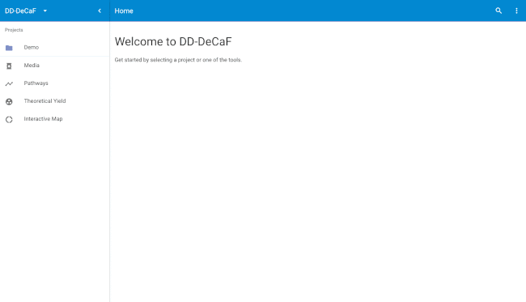
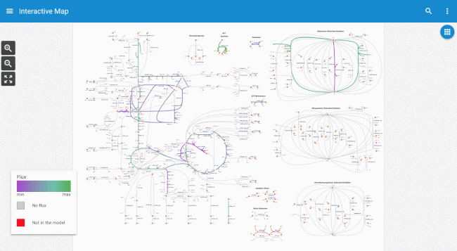
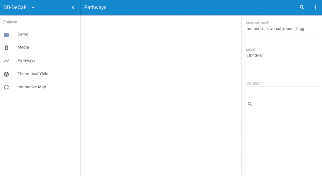

Welcome to our cell factory design and analysis platform! We develop the platform as part of the DD-DeCaF project with the goal to put model-guided and data-driven design into practice in industrial biotechnology. The platform will enable the following key technologies:
With this interactive web application, we target primarily non-expert users that have a need to analyze omics data and compute strains designs. An advance programming interface is provided for expert users (API docs) enabling them deviate from the default workflows and perform custom analyses.
The platform is currently in beta and tested primarily with Google Chrome. If you'd like to stay up-to-date with new releases, please subscribe to our quarterly newsletter. We will be eternally grateful for feedback in case you miss features or you encountered a problem (for now please drop us a message at niso@biosustain.dtu.dk).
The following sections provide an overview of what you can currently do on platform. Have fun!
You can log in here or by navigating to the menu in the upper right-hand corner. We support sign-on through a number of social media platforms. Alternatively, you can contact us for an account.

Logging in is optional, (you can browse public domain data and run simulations) but necessary for uploading your own data.
In the Interactive Map we utilize metabolic pathway maps as an intuitive user interface for model simulation and data analysis, giving biologists the ability to modify models in a visual way instead of writing programming code. For example, reactions can be deleted from the host organism.
All modifications can be undone (for example the reaction deletion).
The side panel on the left provides the user with additional information (for example the medium composition) and the ability to select different model simulation methods. The default simulation method, pFBA (parsimonious flux balance analysis), will compute a flux distribution that maximizes growth yield and minimizes the cost of enzyme expression simultaneously. Descriptions of the other available methods will follow shortly.
Computationally more extensive methods can be chosen to get uncertainty estimates for the predicted fluxes. For example, pFBA-FVA combines pFBA with FVA (flux variability analysis). Uncertain flux are highlighted using transparency.
The side panel furthermore provides a selection of different pathway maps the user can explore other parts of metabolism for example (amino acid biosynthesis).
You can search the map by pressing Ctrl-F (Command-F on Mac). The arrow buttons for cycling through the matches are currently not visible. This will be fixed soon.

Furthermore native and heterologous reactions can be added on the fly which in combination with reaction deletions (see above) facilitates manual strain design.
The application furthermore allows the user to analyze and integrate data with models (see below for how to upload data to the platform).
TODO: add gif for data-driven card and animation
In the Pathways application you can predict metabolic routes to products that your can host can not natively produce. You can share pathways with the Interactive Map application for further inspection.

TODO: update gif once feature is ready
The Theoretical Yield application enables you to evaluate your strain performance in the context of the theoretical production and growth limits.
TODO: update gif once platform fixed
If you're not comfortable uploading proprietary data, please get in touch (niso@biosustain.dtu.dk) as our platform can easily be deployed on your own premise.
TODO: add gifs for data upload